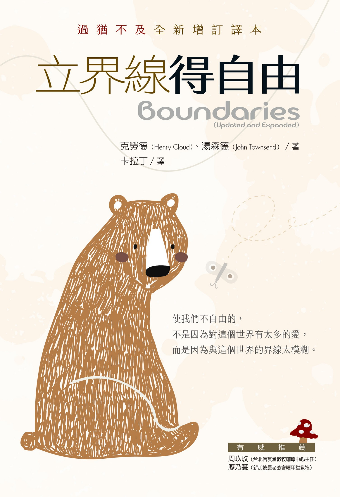

立界線得自由
亨利．克勞德（Henry Cloud）、約翰．湯森德（John Townsend） 著
書名與前言
📖 封面頁
作者簡介
讚譽
Name 書系說明
Name 書系總序
原書簡易目錄頁
推薦序：照見有界線的自由風景
致謝
第一部／什麼是界線？
第一部 引言
第 1 章
界線混亂的一天
第 2 章
界線看來啥模樣？
第 3 章
當界線出了問題
第 4 章
界線的發展歷程
第 5 章
界線十律
第 6 章
常見的界線迷思
第二部／界線衝突
第二部 引言
第 7 章
界線與你的家庭
第 8 章
界線與你的朋友
第 9 章
界線與你的配偶
第 10 章
界線與你的子女
第 11 章
界線與工作
第 12 章
界線與數位時代
第 13 章
界線與自己
第 14 章
界線與上帝
第三部／發展健康的界線
第三部 引言／插圖
第 15 章
對界線的抗拒
第 16 章
評估界線發展進度
第 17 章
界線明確的一天
附錄
中英名詞對照表